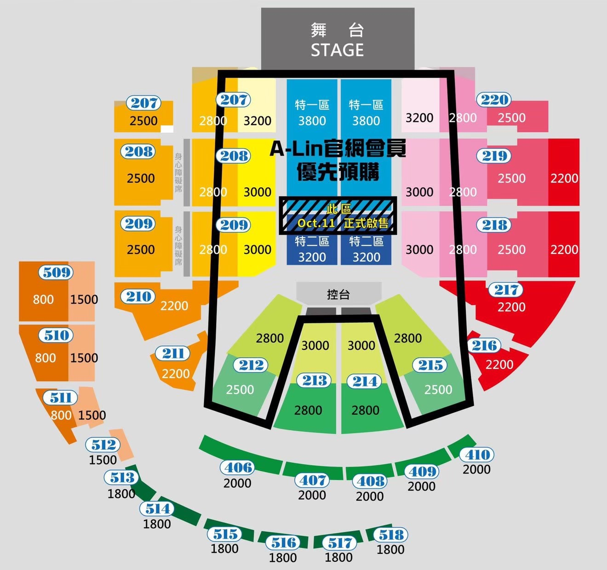
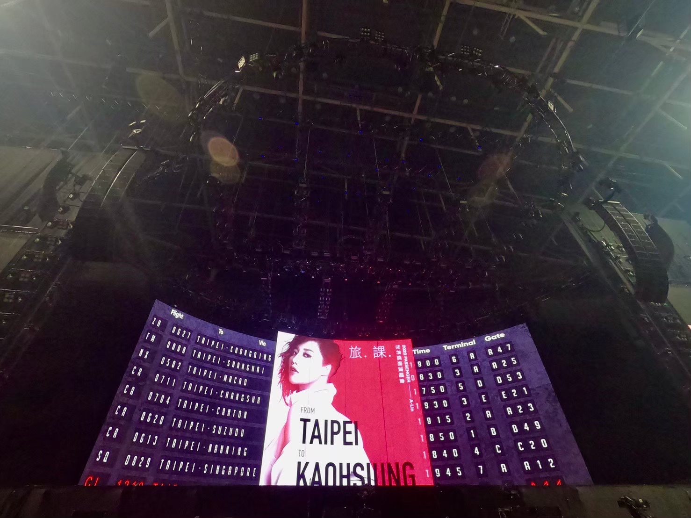
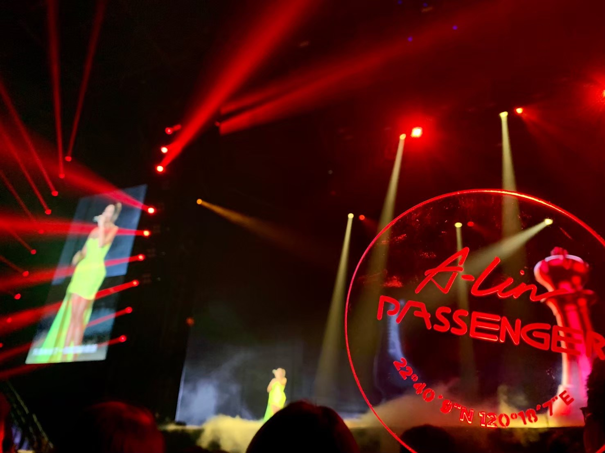
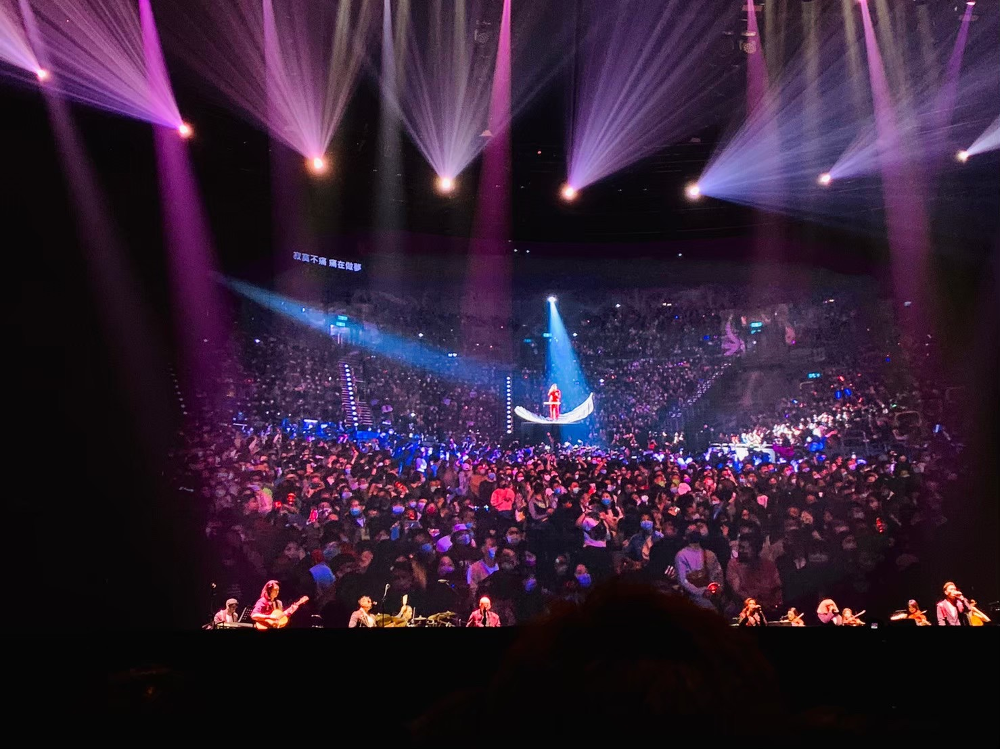
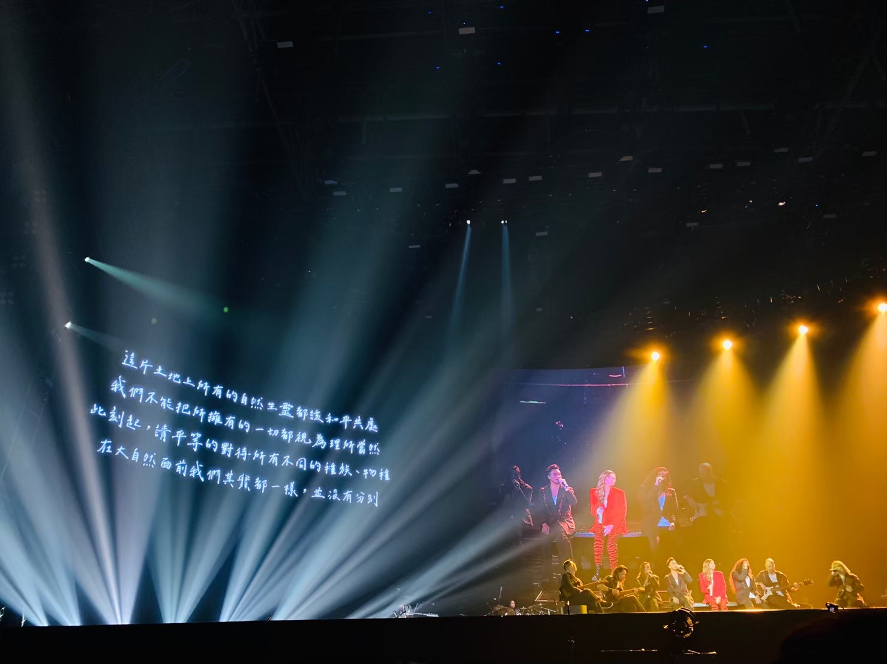

A-LIN---演唱會





A-Lin 2020《Passenger 旅．客》世界巡迴演唱會 高雄站
人生在歷史的長河中只是短暫的一瞬，曇花一現間，酷似流星劃落長空。
無論我們多麼奢望生命可以重來，無論我們多麼祈盼能夠重新回味那些幸福的時光；
然而，人的生命只有一次，人生就像一張單程車票，儘管是開往春天的地下鐵，喜過樂過，走過錯過，一切皆為有去無回的一張單程車票的旅行。
旅程還遙遠
在下個終點之前
記得沿途風景如詩變遷
記得你我曾經結伴同行